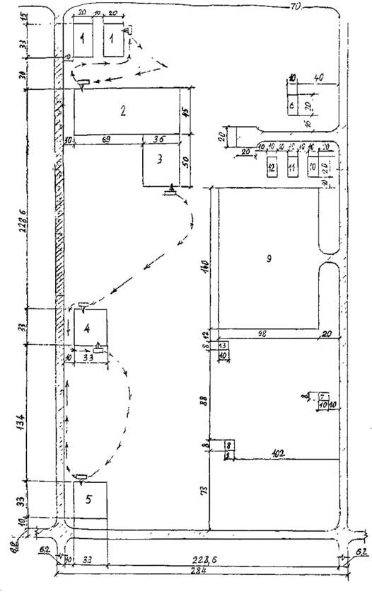
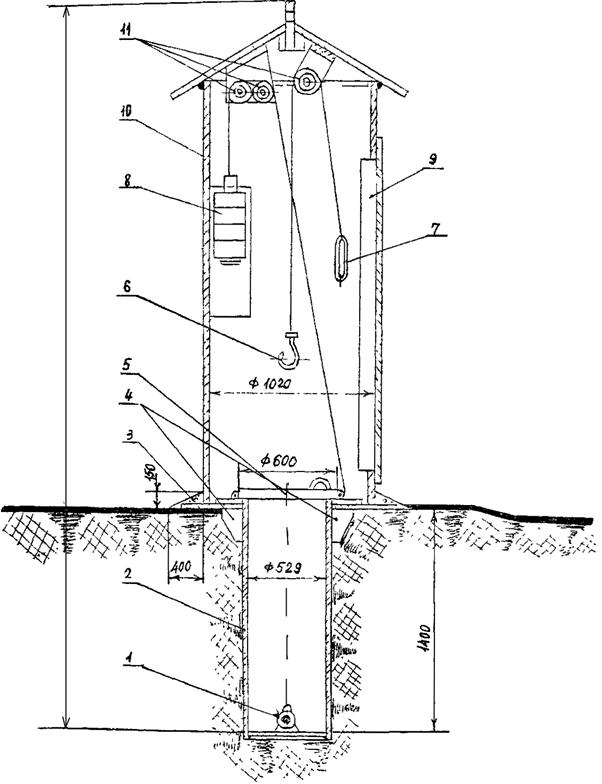

МИНИСТЕРСТВО СТРОИТЕЛЬСТВА
ПРЕДПРИЯТИЙ
НЕФТЯНОЙ И ГАЗОВОЙ ПРОМЫШЛЕННОСТИ
ВСЕСОЮЗНЫЙ
НАУЧНО-ИССЛЕДОВАТЕЛЬСКИЙ ИНСТИТУТ
ПО СТРОИТЕЛЬСТВУ МАГИСТРАЛЬНЫХ ТРУБОПРОВОДОВ
ВНИИСТ
ИНСТРУКЦИЯ
ПО БЕЗОПАСНОЙ ОРГАНИЗАЦИИ РАБОТ
НА ТРУБОСВАРОЧНЫХ БАЗАХ
ВСН 169-84
МИННЕФТЕГАЗСТРОЙ
Москва 1984 г.
В настоящей Инструкции изложены требования безопасной организации работ при заготовке секций труб на всех типах трубосварочных баз, применяемых при строительстве магистральных трубопроводов в системе Миннефтегазстроя.
Инструкция разработана применительно к современной технологии проведения сварочно-монтажных работ при строительстве магистральных трубопроводов и предназначена для инженерно-технических работников на трубосварочных базах.
Строительно-монтажные организации на основе этой Инструкции и с учетом местных условий должны разработать и утвердить в установленном порядке производственные инструкции по видам работ и профессиям.
С введением в действие настоящей Инструкции утрачивают силу «Рекомендации по технике безопасности и производственной санитарии при работе на сварочно-монтажных базах» Р 153-74, (М. ВНИИСТ, 1974).
Инструкция разработана отделами охраны труда и сварки ВНИИСТа (Г.И. Карташев, Л.Н. Ильин; А.Г. Мазель, А.В. Благовещенский и И.А. Шмелева) и согласована с отделом охраны труда и техники безопасности, Управлением главного сварщика Миннефтегазстроя.
Замечания и предложения направлять по адресу: 105058, Москва, Окружной проезд, 19, Отдел охраны труда.
|
Министерство строительства предприятий нефтяной и газовой промышленности |
Ведомственные строительные нормы |
ВСН 169-84 |
|
Инструкция по безопасной организации работы на трубосварочных базах |
Миннефтегазстрой |
|
|
Взамен Р 153-74 |
|
Внесена |
Утверждена Миннефтегазстроем |
Срок введения в действие |
1.1. Настоящая инструкция распространяется на сварочно-монтажные работы, выполняемые на полумеханизированных и механизированных трубосварочных базах.
1.2. При сборке секций из отдельных труб на трубосварочных базах следует руководствоваться:
СНиП III-4-80 "Техника безопасности в строительстве";
СНиП III-42-80 "Магистральные трубопроводы. Правила производства и приемки работ";
ГОСТ 12.1.013-78 ССБТ. "Строительство. Электробезопасность";
ГОСТ 12.1.018-79 ССБТ. "Электробезопасность. Общие требования";
ГОСТ 12.2.007.1-75 ССБТ. "Машины электрические вращающиеся. Требования безопасности";
ГОСТ 12.2.012-75 ССБТ. "Приспособления по обеспечению безопасного производства работ. Общие требования";
ГОСТ 12.2.013-75 ССБТ. "Машины ручные электрические. Общие требования безопасности";
ГОСТ 12.3.003-75 ССБТ. "Работы электросварочные. Общие требования безопасности";
ГОСТ 12.3.009-75 ССБТ. "Работы погрузочно-разгрузочные. Общие требования безопасности";
ГОСТ 12.4.003-80 ССБТ. "Очки защитные. Типы";
ГОСТ 12.3.022-80 ССБТ. "Дефектоскопия радиоизотопная. Требования безопасности";
ГОСТ 12.4.013-75Е ССБТ. "Очки защитные";
ГОСТ 12.4.026-76 ССБТ. "Цвета сигнальные и знаки безопасности";
ГОСТ 12.2.004-75 ССБТ. "Машины и механизмы специальные для трубопроводного строительства. Требования безопасности";
ГОСТ 12.4.011-75 ССБТ. "Средства защиты работающих. Классификация";
ГОСТ 12.1.004-76 ССБТ. "Пожарная безопасность. Общие требования";
ГОСТ 12.4.059-78 ССБТ. "Строительство. Ограждения защитные инвентарные";
ГОСТ 12.2.007.8-75 ССБТ. "Устройства электросварочные и для плазменной обработки. Требования безопасности";
ОСТ 102-7-74 ССБТ. "Центраторы внутренние гидравлические. Общие требования безопасности";
ГОСТ 12.1.003-76 ССБТ. "Шум. Общие требования безопасности";
ГОСТ 12.1.005-76 ССБТ. "Воздух рабочей зоны. Общие санитарно-гигиенические требования";
ГОСТ 12.2.033-78 ССБТ. "Рабочее место при выполнении работ стоя. Общие эргономические требования";
ГОСТ 12.2.049-81 ССБТ. "Оборудование производственное. Общие эргономические требования";
ГОСТ 12.4.080-79 ССБТ. "Светофильтры стеклянные для защиты глаз от вредных излучений на производстве. Технические условия".
Временным положением о режиме труда и отдыха строителей линейной части магистральных трубопроводов. (М., ВНИИСТ, 1981);
Инструкцией о порядке обеспечения рабочих и служащих специальной одеждой, специальной обувью и другими средствами индивидуальной защиты, утвержденной постановлением Госкомтруда СССР и президиумом ВЦСПС 24 мая 1983 г. № 100/II-9.
Приказом Министра здравоохранения СССР № 400 от 30 мая 1969 г. О проведении предварительных при поступлении на работу и периодических медицинских осмотров трудящихся. (М., Изд. Минздрава СССР, 1969);
Правилами пожарной безопасности при производстве строительно-монтажных работ. (М., Стройиздат, 1977);
Правилами техники безопасности при эксплуатации электроустановок. (М., Энергоиздат, 1982);
Правилами охраны высоковольтных линий электрических сетей. (М., Энергия, 1961);
Правилами техники безопасности при строительстве магистральных стальных трубопроводов. (М., Недра, 1982);
Правилами устройства и безопасной эксплуатации грузоподъемных кранов. (М., Металлургия, 1982);
Типовой инструкцией для лиц ответственных за безопасное производство работ по перемещению грузов кранами. (М., Недра. 1977);
Правилами аттестации сварщиков (М., Металлургия, 1971);
Санитарными правилами при сварке, наплавке и резке металлов. (М., Медицина, 1973);
Правилами техники безопасности и производственной санитарии при электросварочных работах. (М., Машгиз, 1966);
Положением о порядке приемки в эксплуатацию трубосварочных баз. (М., Миннефтегазстроя, 1983);
Положением об аттестации электросварщиков (М., ВНИИСТ, 1982);
настоящей Инструкцией.
1.3. Руководство работой по охране труда и ответственность за ее состояние на трубосварочных базах приказом по строительной организации возлагается на руководителей работ (начальника участка, прораба, мастера).
1.4. За несоблюдение требований правил охраны труда инженерно-технические и хозяйственные работники и рабочие трубосварочных баз несут дисциплинарную, административную и уголовную ответственность в установленном законом порядке, а также материальную ответственность в соответствии с законом СССР «О трудовых коллективах и повышении их роли в управлении предприятиями, учреждениями, организациями, принятое постановлением Верховного Совета СССР 17 июня 1983 г.
1.5. Возникающие несчастные случаи, как правило, являются следствием нарушения технологической дисциплины, должностных инструкций и правил безопасности как рабочими, так и инженерно-техническими работниками трубосварочных баз.
Несчастные случаи чаще всего могут возникать по следующим причинам:
- раскатывание штабеля труб, вследствие не закрепления нижнего ряда труб инвентарными упорными башмаками или закрепления, но только с одной стороны;
- работа стропальщиков непосредственно на штабеле труб, а не с подмостей которые устанавливаются по торцам штабели труб;
- перекатывание труб по стеллажам базы с помощью стрелы трубоукладчика, руками, плечами и т.д., а не специальными ключами;
- нахождение рабочих в опасной зоне перекатывания готовых секций из труб;
- перекатывание секций из труб без предварительного звукового сигнала;
- расстроповка труб, поданных на сборочный стеллаж, без их предварительного закрепления упорными башмаками;
- подача труб на сборочный стеллаж не по одной, а целым пакетом, что по условиям безопасности запрещено;
- недостаточный обзор с пульта управления при скатывании готовых секций и без подачи предварительного звукового сигнала;
- отсутствие обозначения предупредительными знаками опасной зоны скатывания готовых секций;
- маневрирование трубоукладчика с грузом без подачи предупредительных сигналов в рабочей зоне слесарей-монтажников около сборочного стеллажа, что условиями безопасности запрещается;
- допуск к работе лиц, не прошедших инструктаж по технике безопасности на рабочем месте;
- производство дополнительных работ (маркировки, замеры торцов чтобы не было овала и т.п.) с готовыми секциями в опасной зоне скатывания этих секций;
- перемещение труб трубоукладчиком из штабеля к сборочному стеллажу волоком, незафиксированных оттяжками и другими неправильными приемами;
- нахождение рабочих в световом пространстве между трубами во время их центровки внутренним центратором, что условиями безопасности исключается;
- подача внутреннего центратора для центровки труб на сборочном стеллаже без предварительной очистки внутренней полости труб от льда, снега, песка и т.п.;
- перескакивание трубы через роликовые опоры, в результате накатывания трубы вручную с помощью торцового ключа на роликовые опоры механизированной линии ССТ-141, без предварительной проверки на исправность роликовых опор;
- нахождение стропальщиков на трубоплетевозе во время подъема труб при их разгрузке;
- эксплуатация механизированных трубосварочных баз с неисправными упорами накопители (перекачивание через упоры перекатываемых труб);
- просвечивание сварных швов готовых секций радиоактивными изотопами не в отведенных для этого местах и работа дефектоскопистов в зоне, не обозначенной знаками безопасности;
- работа трубоукладчиков в опасной зоне, где ведется просвечивание сварных швов радиоактивными изотопами;
- работа по зачистке сварных швов от сварочного шлака в опасной зоне перекатывания других секций;
- отсутствие постоянного технического надзора за производством работ;
- допуск к работе в опасной зоне просвечивания сварных швов радиоактивными изотопами строительной техники;
- прокладка электролинии (кабелей) с нарушением требований электробезопасности;
- работа грузоподъемных машин вблизи действующих ЛЭП без соответствующего надзора со стороны инженерно-технических работников.
1.6. Все вновь поступающие на работу рабочие могут быть допущены к исполнению своих обязанностей только после прохождения вводного инструктажа по охране труда и первичного инструктажа по технике безопасности на рабочем месте в соответствии с принятой технологией и проектом производства работ.
В последующем повторный инструктаж на рабочем месте должен производиться через каждые три месяца, а внеплановый - при переходе на другую работу и при изменении условий труда.
Все виды инструктажа регистрируются в специальных журналах с подписями инструктируемого и того кто провел инструктаж.
1.7. Работающие на трубосварочных базах должны пройти медицинский осмотр. Обязательному предварительному при поступлении на работу и периодическому медицинскому осмотру один раза год.
Все рабочие должны пройти обучение по технике безопасности, так как к ним предъявляются дополнительные (повышенные) требования по безопасности выполнения работ. Без предварительного обучения к самостоятельной работе они не допускаются.
1.8. Во всех случаях по окончании обучения каждый рабочий должен сдать экзамен комиссии по проверке знаний. Выдержавшим экзамен выдаются соответствующие удостоверения.
1.9. Ежегодно все рабочие должны проходить проверку знаний по технике безопасности. При неудовлетворительных знаниях следует провести дополнительный инструктаж, а при необходимости и дополнительное обучение по технике безопасности с последующей повторной проверкой знаний.
1.10. Инженерно-технические работники, направляемые для руководства работами на трубосварочные базы, до вступления в должность должны пройти проверку знаний действующих норм и правил техники безопасности.
1.11. Проверка знаний у инженерно-технических работников (ИТР) проводится в соответствии с ОСТ 102-77-83 "ССБТ Организация обучения безопасности труда, проверка знаний и допуска к работе руководящих и инженерно-технических работников. Общие положения".
1.12. Проведение обучения и проверки знания оформляются документально (журналы, протоколы проверки, удостоверения и т.п.).
1.13. На трубосварочных базах в каждой смене должен быть ответственный за безопасное производство работ по перемещению грузов кранами, которого назначают приказом руководства строительной организации из числа инженерно-технических работников. Это лицо (ответственный) должно пройти проверку знаний правил техники безопасности в постоянно действующей комиссии. В необходимых случаях в состав комиссии включается представитель органов Госгортехнадзора. Ответственный за безопасное производство работ по перемещению грузов кранами должен каждые три года сдавать экзамены.
Во время отпуска, командировки и в других случаях отсутствия лица, ответственного за безопасное производство работ по перемещению грузов кранами, выполнение его обязанностей, должно быть возложено приказом на работника, заменившего его по должности с соблюдением требований, указанных выше.
1.14. Рабочие трубосварочных баз должны быть обеспечены спецодеждой, спецобувью, а такие средствами индивидуальной защиты (респираторы, защитные очки, диэлектрические защитные средства и т.п.) в соответствии с выполняемой ими работой и согласно действующим нормам. В спецодежде, облитой горючими или смазочными материалами нельзя работать, курить и подходить к огню.
1.15. До начала работ на руки рабочим следует выдавать соответствующую инструкцию по технике безопасности, которую они обязаны изучить и строго выполнять.
1.16. В распоряжение бригад, работающих на трубосварочных базах, должны быть выделены помещения для отдыха и обогрева (передвижные вагончики или полустационарные домики). В этих помещениях необходимо оборудовать уголки по технике безопасности.
1.17. На трубосварочных базах должны быть выделены помещения или места для размещения аптечек с медикаментами, носилок, фиксирующих шин и других средств для оказания первой помощи пострадавшим. Руководителю работ следует назначить из числа работающих ответственного за состояние каждой аптечки и обеспечить его обучение приемам (до врачебной) помощи пострадавшим.
1.18. В зимнее время для обогрева рабочих устанавливаются перерывы в работе в соответствии с постановлениями Советов народных депутатов.
1.19. При работе с электроустановками и другим электрооборудованием следует руководствоваться "Правилами технической эксплуатации электроустановок потребителей и правилами техники безопасности при эксплуатации электроустановок потребителей". Госэнергонадзора. М., Изд-во Энергия, 1970.
1.20. Электромонтер или электрослесарь, обслуживающий электрооборудование, должен быть:
обучен основам электротехники, техники безопасности, всем оперативным переключениям по схеме и иметь квалифицированное удостоверение и IV группу по технике безопасности по обслуживанию электрооборудования;
снабжен набором электроинструментов, приборами (тестер, мегометр, индикатор напряжения и т.п.), схемами электрооборудования базы и личными защитными средствами (диэлектрическими галошами перчатками и т.д.).
1.21. На сварочной базе все электрооборудование (электросварочные установки, передвижные электростанции, электрощиты, рубильники и т.п.), сварочные стеллажи, кабины управления, торцовые вращатели и другие металлоконструкции должны быть соединены между собой и с заземляющим устройством источника питания стальной шиной сечением не менее 48 мм2 и толщиной не менее 4 мм. Возможно применение шин из других металлических профилей общим сечением не менее вышеуказанного. Заземление электросварочных установок выполняется до включения их в электросеть, после чего проводится инструментальная проверка заземления с изменением сопротивления заземляющих устройств и составляется акт проверки. В дальнейшем такая проверка заземления проводится не реже одного раза в год. Сопротивление заземления должно быть не более 4 Ом. Работать без заземления строго запрещается.
1.22. После монтажа электрооборудования сварочной базы следует провести проверку сопротивления изоляции электрических цепей (кроме аппаратуры пониженного напряжения - 60В и ниже) испытательным напряжением 1000В в течение 1 мин, а в дальнейшем - 1 раз в год мегомметром на 500В, при этом сопротивление в цепях, электрически связанных с сетью, должно быть не менее 1 мОм и в цепях, электрически не связанных с сетью - не менее 0,5 МОм. Сопротивление изоляции сварочных кабелей при ручной сварке проверяется не реже 1 раза в 3 месяца, а при полуавтоматической - не реже 1 раза в месяц.
1.23. При эксплуатации электрооборудования базы двери шкафов распределительных устройств, электрощитов, рубильников и т.п. должны быть закрыты на замок, а ключ хранится у электромонтера (у электрослесаря).
1.24. Перед началом каждой смены электромонтер (электрослесарь) трубосварочной базы обязан внешним осмотром проверить исправность изоляции кабелей, проводов, всего электрооборудования и заземления. При обнаружении неисправностей - устранить их до начала работы. В случае невозможности устранения неисправности доложить производители работ или мастеру.
1.25. При эксплуатации оборудования запрещается:
проводить профилактические осмотры и ремонтные работы под напряжением;
работать при снятых крышках клемных коробок, а также разъединять штекерные разъемы без снятия напряжения.
Все вышеуказанные работы можно выполнять только после того, как будет снято напряжение.
1.26. На сварочной базе должны быть оборудованы противопожарные щиты со средствами противопожарной безопасности (огнетушители, копила, лопаты, топоры, багры, ящики с песком и т.п.).
Все бригады рабочих должны быть обучены умению пользоваться противопожарными средствами.
1.27. Рабочие трубосварочных баз должны бесперебойно снабжаться кипяченой питьевой водой. Водные источники для снабжения питьевой водой должны использоваться только с разрешения органов санитарного надзора. Питьевую воду необходимо хранить в плотно закрывающихся на замок эмалированных бачках, расположенных на расстоянии не более 75 м от рабочих мест. Ежедневно бачки следует очищать и промывать.
1.28. С приближением грозы работы вне помещений необходимо прекратить, рабочих отвести в помещения или укрытия на расстояние не менее 25 м от мест скопления металла (штабель труб, стеллажи, машины и механизмы). Запрещается в грозу находиться у высоких деревьев в лесу, около стогов сена и деревьев в поле, молниеотводов, столбов, различных матч и других высоких предметов, на возвышенной местности или на открытых равнинных местах. Места нахождения людей при грозе должны быть заранее определены, а работающие поставлены об этом в известность.
1.29. При несчастном случае с временной потерей трудоспособности пострадавшему или очевидцу нужно немедленно сообщить об этом мастеру или прорабу. При этом мастер или прораб должны:
немедленно организовать первую медицинскую помощь пострадавшему, а при необходимости вызвать врача;
не позднее 24 ч после несчастного случая провести расследование с участием старшего общественного инспектора по охране труда и инженера по технике безопасности или лица его замещающего;
составить акт о несчастном случае по форме «Н-1» в пяти экземплярах (один экземпляр для ГИВЦ) и направить его главному инженеру строительной организации.
1.30. Каждый рабочий должен уметь оказывать первую помощь пострадавшему при несчастном случае.
1.31. Расследование несчастных случаев на производстве следует осуществлять в соответствии с «Положением о расследовании и учете несчастных случаев на производстве» М., Профиздат, 1982г.
1.32. Лица, нарушающие производственную и трудовую дисциплину не соблюдающие требования правил безопасности, могут быть отстранены от работы и привлечены к ответственности согласно правилам внутреннего трудового распорядка. Категорически запрещается допускать к работе лиц в нетрезвом состоянии.

Рис. 1. Примерная схема расположения оборудования и строений на трубосварочной базе.
1 - склад отдельных труб; 2 - площадка для сборки и сварки секций; 3 - зона скатывания готовых секций; 4 - площадка для контроля качества сварных швов; 5 - погрузка готовых секций; 8 - санитарно-бытовые помещения; 7 - склад ГСМ; 8 - ампулохранилище радиоактивных изотопов; 9 - стоянка строительных машин и автотранспорта; 10 - мастерская; 11 - лаборатория контроля сварных швов; 12 - склад сварочных материалов, запчастей и др. 13 - туалет; -> -> -> путь движения трубоукладчиков
ПРИМЕЧАНИЕ: 1. Размеры на схеме указаны в метрах;
2. Применительно к местным условиям и исходя из наличия оборудования (МТЛ, ПАУ, БТС и т.д.) размеры площадок для сборки и сварки секций, а также для скатывания готовых секций (2,3) и их размещение на местности могут быть изменены;
3. Трубосварочная база обслуживается двумя трубоукладчиками. Один трубоукладчик занят на транспортировке труб из штабеля (1) на стеллажи накопителя базы (2). Второй - занят транспортированием готовых секций из зоны скатывания (3) на площадку для контроля качества сварных швов (4) и затем после просвечивания стыков транспортирует секции на площадку (5) для погрузки их на трубоплетевозы. На схеме путь движения трубоукладчиков указан пунктирными стрелками.
1.33. Для размещения трубосварочной базы выбирается ровная площадка с удобными к ней подъездами. Площадку необходимо спланировать и устроить водоотводы для стока поверхностных вод. Уклон площадки должен быть не более 2°.
1.34. В процессе эксплуатации площадку следует содержать в порядке: не захламлять, следить чтобы проходы и проезды были всегда свободными и регулярно очищаться от мусора (остатков флюса, огарков электродов, кусков проволоки, стружки, предохранительных колец, которые снимают с торцов труб и т.д.), дороги и проходы в зимнее время очищать от снега и льда и посыпать песком или шлаком, а в летнее время не допускать застоя воды, особенно на подъездных дорогах и путях.
1.35. Расположение на площадке трубосварочной базы постоянных и временных сооружений, механизированных и автоматических установок, складов, сетей энергоснабжения должно соответствовать строительному генеральному плану. Примерное расположение оборудования и строений базы дано на рис. 1.
1.36. Монтаж установок и другого оборудования следует выполнять в определенной последовательности в соответствии с требованиями, указанными в инструкции по монтажу и эксплуатации монтируемой трубосварочной базы.
1.37. Размещение сварочного оборудования должно обеспечивать безопасный и свободный доступ к нему.
1.38. Временные склады для хранения горюче-смазочных материалов и баллонов с газами следует устраивать на расстоянии не менее 50 м от места производства работ и источников огня (сварочные работы, курение и т.п.). Оборудование и устройство этих складов должно соответствовать действующим Правилам пожарной безопасности и ГОСТ 12.1.004-76. "ССБТ. Пожарная безопасность. Общие требования".
Бочки с горючим и порожние должны закрываться пробками.
1.39. Для обеспечения безопасности движения транспортных и строительных машин внутри трубосварочной базы устраиваются проезды шириной 4,5 м при одностороннем движении и не менее 6,2 м при двухстороннем движении. Радиусы поворота проездов должны быть не менее 15 м. Предельная скорость движения автомобилей долина быть не более 5 км/час, которая указывается на дорожных (предупредительных) знаках в соответствии с ГОСТ 10807-78. В местах перехода через канавы и водотоки должны быть устроены мостики шириной 0,8 м с перилами с обоих сторон высотой не менее 1 м.
1.40. На трубосварочной базе должны быть оборудовали санитарно-бытовые помещения (гардеробные, умывальные, уборные и др.).
1.41. Сварочные стеллажи изготавливают из жестких сварных металлических конструкций. Рабочая поверхность стеллажей должна быть строго горизонтальной - отнивелированной (допускается отключение от горизонтали не более 30'); горизонтальность следует проверять каждые три месяца. Расположенные на стеллажах, проходы для рабочих должны быть оборудованы инвентарными стремянками или лестницами с перилами.
1.42. При работах в темное время суток проезды, проходы и места складирования должны иметь освещенность не менее 10 лк; при выполнении сварочно-монтажных работ освещенность должна быть не менее 20 лк. Освещение должно быть равномерным без слепящего действия.
1.43. Опасные для людей зоны на сварочно-монтажной базе должны быть обозначены знаками безопасности, предупредительными надписями и сигнальными ограждениями установленной формы в соответствии с ГОСТ 23407-78, ГОСТ 12.4.026-76 и ГОСТ 10807-78. Такими зонами являются:
зоны вблизи от неизолированных токоведущих частей источников питания (трансформаторных подстанций, электростанций, сварочных источников питания, токоведущих проводов, кабелей и т.д.);
зоны перемещения труб, машин и оборудования;
зоны погрузочно-разгрузочных работ;
зоны штабелирования труб;
зоны скатывания трубных секций;
зоны просвечивания стыков труб гамма-рентгено-дефектоскопами;
зоны сварочных работ внутри трубопровода.
1.44. Находясь на территории трубосварочной базы, необходимо соблюдать следующие требования безопасности:
ходить только по той части территории, которая предназначена для прохода;
быть внимательным к сигналам движущихся машин, работающих грузоподъемных кранов и механизмов;
не находиться под поднимаемым или перемещаемым грузом.
Заправлять машины топливом следует только с помощью насосов и в местах, предназначенных для заправки; эти места должны быть снабжены средствами пожаротушения; горюче-смазочные материалы нельзя тушить водой; для этой цели следует пользоваться огнетушителем типа «Тайфун», землей, войлоком, брезентом и т.п.; облитые горюче-смазочными материалами части машин необходимо насую вытереть; места, где такие материалы пролиты, следует засыпать землей; тару с горюче-смазочными материалами следует открывать специальным ключом; нельзя для этого пользоваться ударными инструментами, образующими искры.
1.45. Во избежание поражения электрическим током необходимо знать и выполнять следующие требования безопасности:
не ввертывать и не вывертывать электролампы при невыключенной электросети;
не касаться оборванных электрических проводов и корпусов электродвигателей, которые в случаях неисправности заземляющих устройств могут оказаться под напряжением;
не исправлять что-либо самовольно в электросети или электрооборудовании, не имея допуска к этим работам; такую работу должен выполнять дежурный электромонтер в резиновых диэлектрических перчатках и с применением других защитных средств;
ручные переносные светильники применять только заводского изготовления, огражденные металлической защитной сеткой; у таких светильников в условиях трубосварочных баз напряжение долило быть не свыше 12В и шланговый провод светильников должен иметь специальную вилку, которую нельзя включать в розетку сети с напряжением более 12В;
оголенные концы проводов, отсоединенных от снятого электрооборудования, должны быть надежно заизолированы;
временную электропроводку следует выполнять только из изолированного провода; при этом подвешивать его разрешается на высоте: над рабочим местом - не менее 2,5 м; над проходами - 3,5 м; над проездами - 6 м. Если изолированные электропровода необходимо подвесить над рабочим местом на высоте не менее 25 м, их заключают в трубы или короба и при этом следует убедиться, чтобы напряжение их было не более 42В;
на трубосварочных базах разрешается работать ручным электроинструментом при напряжении не выше 42В; корпус электроинструмента, работающего при напряжении свыше 42В должен быть заземлен; работать электроинструментом во время дождя или снегопада разрешается только под навесом и в диэлектрических перчатках; разрешается использовать ручные электрические шлифовальные машинки класса II с двойной или усиленной изоляцией на напряжение 220В, питающиеся переменным током промышленной частоты 50 Гц, но при работе с ними необходимо применять средства индивидуальной защиты (диэлектрические перчатки, галоши и коврик).
1.46. Перед началом работы всем рабочим следует:
выдать положенную спецодежду и иметь необходимые защитные средства;
привести в порядок рабочее место и проходы, освободив их от мусора и посторонних предметов;
проверить исправность инструмента, инвентаря и других приспособлений;
если обнаружены неисправности, которые невозможно устранить своими силами, доложить об этом мастеру (прорабу), до устранения этих неисправностей начинать работу не разрешается.
2.1. Погрузочно-разгрузочные работы, выполняемые при помощи грузоподъемных машин (кранов, трубоукладчиков и т.п.), следует осуществлять под руководством лица, ответственного за безопасное производство работ по перемещению грузов кранами и аттестованного комиссией на основании "Правил устройства и безопасной эксплуатации грузоподъемных кранов", М., Изд-во Металлургия, 1982.
2.2. Лицо, ответственнее за безопасное перемещение грузов кранами обязано:
ознакомить работающих с проектом производства работ и технологической схемой данного вида операций;
следить за исправным состоянием и своевременным осмотром съемных грузозахватных приспособлений;
указывать крановщикам и стропальщикам места и порядок складирования труб и секций;
назначать старшего стропальщика и при необходимости сигнальщика;
не допускать к обслуживанию крана лиц, не имеющих соответствующих удостоверений (стропальщик, зацепщик и т.п.);
требовать строгого выполнения производственных инструкций персоналом, обслуживающим грузоподъемный кран (машинист, стропальщик). Особое внимание уделять правильности зацепки труб и секций, не допускать перегрузки крана, следить чтобы не было людей в опасной зоне при работе крана;
при необходимости проводить инструктаж по технике безопасности работающих на обслуживании крана;
запрещать работу с неисправными грузозахватными приспособлениями;
не допускать перемещения грузов волоком и над людьми;
не разрешать подъем защемленных и неправильно застрахованных грузов;
прекращать работу кранов при ветре силой более 6 баллов, во время сильного снегопада, тумана или грозы.
2.3. Грузоподъемные механизмы и грузозахватные приспособления должны быть исправными и соответствовать "Правилам устройства и безопасной эксплуатации грузоподъемных кранов", М., Изд-во Металлургия, 1982 г.
Приспособления необходимо подвергать техническому осмотру не реже чем каждые 10 дней, а клещевые захваты - через месяц.
Результаты технического осмотра нужно заносить в журнал учета и осмотра.
2.4. К погрузочно-разгрузочным работам с применением грузоподъемных машин допускаются рабочие не моложе 18 лет, прошедшие специальное обучение, сдавшие экзамены и получившие удостоверение строповщика на право обслуживания грузоподъемных механизмов.
2.5. Стальные трубы диаметром более 300 мм следует укладывать в седло штабелями высотой не более 8 м с применением автоматических захватов без нахождения рабочих на штабеле. При этом трубы должны крепиться специальными инвентарными приспособлениями, обеспечивающими устойчивость их в штабеле и безопасность работающих. В случае отсутствия автоматических захватов складировать трубы следует в штабеля высотой не более 3 м с закреплением инвентарными упорными башмаками нижнего ряда труб против их раскатывания.
2.6. При работе по укладке труб в штабеля необходимо применять переносные инвентарные площадки и стремянки. При этом стропальщикам запрещается:
при подъеме труб ударять по стропам и крюку крана;
стоять, проходить или работать под поднятыми трубами;
оставлять трубы лежащими в неустойчивом положении.
2.7. Штабеля труб должны быть расположены правильными рядами. Между штабелями устраиваются проезды, ширина которых должна быть не менее 8,5 м, при этом должны быть обеспечены свободные проходы не менее 1 м с обеих сторон (между штабелем и автокраном, между автокраном и трубоплетевозом).
2.8. ширину штабеля труб следует назначать из расчета, чтобы трубы можно было укладывать при помощи стрелы крана непосредственно на место без дополнительной перекатки.
2.9. В случае необходимости перекатки труб по покатам последние должны быть рассчитаны на прочность. Сечение покатей должно быть не менее 160´180 мм. Перекатку труб необходимо осуществлять специальными ключами.
2 10. Перед началом работы машинист грузоподъемного крана должай проверить:
механизмы крана, их тормоза и крепления, а также ходовую часть и тяговые устройства;
смазку передач, подшипников и канатов;
стрелу и ее подвеску;
состояние канатов и грузозахватных приспособлений (траверс, крюков и т.п.).
2.11. Во время работы машинист не должен отвлекаться от своих прямых обязанностей, а также производить очистку и смазку механизмов.
2.12. Застроповку труб можно производить, когда стропы, находящиеся в отвесном положении, расположены посредине продольной оси трубы.
2.13. Снимать стропы с выгружаемых труб можно только после того, как труба будет уложена и надежно закреплена.
2.14. Трубы, перевозимые на автомобилях, тракторных прицепах и других транспортных средствах, должны быть надежно укреплены во избежание смещения и возможного падения при их транспортировке.
2.15. Перед погрузкой секций из труб на автотранспорт для удержания прицепа на месте под его колеса необходимо подкладывать тормозные башмаки (противооткатные упоры).
2.16. При погрузке секции на транспортные средства людям запрещается находиться на раме автомобиля и на прицепе.
2.17. После погрузки секции на автопоезд шоферу необходимо надеть страховочный буксирный трос и соединить гидро- пневмо- и электрические системы автомобиля и прицепа.
2.18. Перед перевозкой секций труб на автопоезде необходимо:
секции надежно укрепить, а их передние и задние торцы закрепить против продольного смещения ограничителями-крючьями, присоединенными канатом или цепью к конику автомобиля и прицепа;
автомобиль и прицеп надежно соединить предохранительным (аварийным) стальным канатом;
секции обозначить сзади красными флажками, а в темное время суток и в дневное при видимости менее 20 м - зажженными фонарями красного цвета.
3.1. К сварке труб на трубосварочной базе допускаются лица, которые:
прошли специальный курс обучения и сдали испытание на право сварки труб в соответствии с "Правилами аттестации сварщиков", Госгортехнадзора СССР, (М., Изд-во Металлургия, 1971);
получили удостоверение сварщика;
сварили допускной стык в соответствии с "Положением об аттестации электросварщиков", (М., ВНИИСТ, 1983).
Электросварщики должны иметь II квалификационную группу по технике безопасности.
3.2. Для проверки работы отдельных узлов, агрегатов и взаимодействия систем базы необходимо перед началом ее эксплуатации выполнить обкатку.
3.3. Перед обкаткой необходимо провести внешний осмотр базы, проверить:
затяжку креплений;
правильность соединения штекерных разъемов;
уровень масла в редукторах и наличие смазки в трущихся деталях и в гидравлической системе.
Гидравлическую систему запрещается заправлять, если находящиеся в ней масло загрязнено посторонними примесями.
3.4. После обкатки базы вхолостую производят ее опробование под рабочей нагрузкой. По окончании монтажа, обкатки и опробования база должна приниматься в эксплуатации, комиссией, возглавляемой главным инженером организации, с оформлением приемочного акта в соответствии с «Положением о порядке приемки в эксплуатацию трубосварочных баз» М., Изд-е Миннефтегазстрой, 1983 г. (см. приложение).
3.5. Для предохранения от брызг расплавленного металла и излучения сварочной дуги (ультрафиолетовое и инфракрасное), сварщик должен носить брюки спецодежды, одетые поверх обуви и рукавицы с крагами, а глаза защищать специально маской или щитом со светофильтром. Светофильтры следует подбирать с учетом применяемой силы тока по данным таблицы 1.
Таблица 1
Классификация светофильтров в зависимости от силы тока
|
Сила сварочного тока, А |
Обозначение светофильтров |
Классификационный номер |
|
от 20 до 50 |
С-4 |
9 |
|
свыше 50 до 150 |
С-5 |
10 |
|
свыше 150 до 250 |
С-6 |
11 |
|
свыше 250 до 350 |
С-7 |
12 |
|
свыше 350 до 500 |
С-8 |
13 |
|
свыше 500 до 600 |
С-9 |
14 |
Перед светофильтрами следует вставлять обычное стекло, которое заменяется по мере загрязнения.
Слесаря, работающие совместно с электросварщиком, должны быть обеспечены защитными очками В-3 (классификационный номер-4) со специальными стеклами светофильтрами Г-1, защищающими глаза от ультрафиолетовых и тепловых лучей. Очки следует надевать при работе на расстоянии не менее 10 м от места сварки.
При ручной дуговой сварке стыка несколькими сварщиками следует использовать защитный шлем и коврик.
3.6. На сварочных базах рабочее место электросварщика должно быть оборудовано кабиной (укрытием) с вентиляцией; эргономическими приспособлениями и освещением.
3.7. Электросварочные установки должны включаться в электросеть (в работу) только при помощи пусковых устройств.
3.8. Осуществлять питание электросварочной дуги непосредственно от силовой или осветительной электросети запрещается.
3.9. В передвижных электросварочных установках для подключения их к сети следует предусматривать блокирование рубильника, исключающее возможность присоединения и отсоединения провода от зажимов, когда последние находятся под напряжением.
3.10. Напряжение холостого хода электросварочных установок переменного тока не должно превышать 30В, а установок постоянного тока - 100В.
3.11. Перед сменой кассеты со сварочной проволокой и других вспомогательных работах, электросварщик должен с поста сварочной головки отключить сварочный выпрямитель.
3.12. Ежедневно перед началом рабочей смены необходимо проверять исправность электросварочных агрегатов, обращая особое внимание на отсутствие напряжения на корпусе и на наличие исправного заземления.
3.13. В течение рабочего дня периодически проверять исправность электрододержателя, надежность изоляции его рукоятки и другого инструмента. Оставлять без присмотра электрододержатель, находящийся под напряжением, запрещается.
3.14. Вышедшую из строя электрическую часть сварочных агрегатов разрешается ремонтировать только электромонтерам и электрослесарем. Сварщикам выполнять эту работу запрещается.
3.15. При осмотрах, чистке, смазке и ремонте оборудования базы напряжение следует отключать в шкафу блока питания, при этом у выключателя вывешивается предупредительная надпись:
«Не включать! Работают люди».
При непосредственном выполнении работ в шкафу блока питания, напряжение следует отключать на источнике питания, так как при отключенном автоматическом выпрямителе под напряжением остаются верхние контакты цепи освещения блока питания.
3.16. При выполнении сварочных работ сварочные провода следует прокладывать так, чтобы проходящие машины и механизмы не повредили их, а провода не касались металлических предметов, шлангов для кислорода и ацетилена, а также ацетиленовых генераторов или баллонов с пропан-бутаном.
3.17. При подключении сварочных проводов к агрегату питания все включающие устройства (рубильники, выключатели, пульты, кнопки э т.д.) должны быть отключены.
3.18. Для подвода тока к электродержателю следует применять гибкий провод с резиновой изоляцией в резиновой шланговой оболочке. Допустимое сечение медных сварочных проводов принимается в зависимости от величины сварочного тока по таблице-2.
Таблица 2
Сечение медных сварочных проходов в зависимости от сварочного тока
|
Сила сварочного тока, А |
Сечение сварочных проводов мм2 |
|
100 |
16 |
|
200 |
25 |
|
240 |
25 |
|
300 |
35 |
|
400 |
50 |
|
600 |
70 |
В качестве обратного провода, соединяющего свариваемое изделие с источником тока, могут служить гибкие провода, а также (где это возможно) стальные шины любого профиля достаточного сечения. Соединение отдельных элементов, составляющих обратный провод, должно быть выполнено тщательно при помощи болтов, струбцин или зажимов.
3.19. Использовать в качестве обратного провода сеть заземления, а также металлические строительные конструкции, коммуникации и технологическое оборудование запрещается.
3.20. Гирлянды сварочных проводов автоматической сварочной установки (головки) следует подвешивать на специальных воздушных растяжках - стальных канатах.
3.21. При горизонтальном перемещении труб трубоукладчиком из штабеля на складе базы к стеллажам накопителя необходимо:
не стягивать трубу из штабеля волоком;
трубу поднимать не менее чем на 0,5м выше встречающихся на пути предметов;
чтобы избежать раскачивания во время перемещения, трубу удерживать оттяжками или специальными баграми.
3.22. Укладывать трубы на стеллаж накопителя разрешается только в один ряд (по высоте). Укладка труб в два ряда и выше запрещается.
3.23. После того, как труба опущена на стеллаж накопителя, стропальщикам не разрешается отцеплять трубу до тех пор, пока она не будет укреплена с обоих сторон в двух точках по длине специальными упорными башмаками.
324. Править вмятины на концах труб следует при помощи специальных приспособлений или домкратом.
3.25 Слесаря - монтажники должны перекатывать трубы по стеллажам накопителя при помощи специального ключа, находясь при этом в торце перекатываемой трубы. Во избежание несчастных случаев не разрешается находиться на пути перекатываемых труб.
3.26. При центровке труб запрещается находиться в световом пространстве между торцами труб.
3.27. Перед началом работ с внутренним центратором необходимо проверить работу гидравлического привода центрирующих элементов и исправность манометров.
3.28. Внутренние самоходные центраторы должны иметь дистанционное управление и аварийный выключатель.
3.29. Внутренний центратор разрешается убирать или перемещать ко второму стыку только после того, как корневым слоем сварено 3/4 периметра стыка.
3.30. При одновременной сварке одного и того же шва несколькими сварщиками, они должны предупредить друг друга и слесарей сборщиков о зажигании сварочной дуги. Для предохранения работающих внизу сварщиков от ожога брызгами расплавленного металла следует использовать инвентарные защитные козырьки.
3.31. При выполнении газокислородной резки и подогрева стыков труб с использованием газовых баллонов следует соблюдать следующие условия безопасности:
баллоны следует хранить в отдельном специально оборудованном помещении только в вертикальном положении в гнездах специальных стоек. Порожние баллоны должны храниться раздельно от баллонов, заполненных газом;
вентили газовых баллонов должны быть закрыты предохранительными колпаками. Приемка хранение и отпуск газовых баллонов для производства работ без предохранительных колпаков запрещается;
газовые баллоны должны иметь соответствующую окраску и надпись с наименованием газа. Баллоны со сжатым газом во время работы должны быть защищены от ударов;
замерзшие вентили газовых баллонов разрешается отогревать только паром или горячей водой, не имеющей следов масла;
на месте производства работ кислородные и ацетиленовые баллоны необходимо защищать от действия прямых солнечных лучей;
запрещается использовать редукторы без или с неисправными манометрами, а также с манометрами, срок проверки которых истек;
запрещается разводить открытый огонь, курить и зажигать спички в пределах 10 м от кислородных и ацетиленовых баллонов;
баллоны должны перевозить, хранить, выдавать и получать только лица, сдавшие экзамены по обращению с баллонами для кислорода и горючих газов;
наполненные или порожние баллоны должны располагаться так, чтобы они не соприкасались с токоведущими проводами;
запрещается совместное хранение баллонов для сжиженного газа и для кислорода как наполненных, так и порожних;
запрещается применять для кислорода редукторы и шланги, использовавшиеся ранее для работы со сжиженными газами;
транспортировку баллонов от места хранения к сварочному посту следует осуществлять на специальных тележках или переносить их вручную вдвоем на специальных носилках;
перед установкой баллонов со сжатым или сжиженным газами на сварочный, пост визуально осмотреть и убедиться в целости корпуса с баллонов (отсутствие трещин) и в исправности, вентиля;
во время работы баллоны надежно закрепить, чтобы они не упали:
баллоны с горючими газами располагать на расстоянии не менее 10 м, чтобы на них не падали брызги расплавленного металла;
пользоваться только специальными ключами для открывания и закрывания вентиля баллонов. Запрещается в этом случае применять любые ударные инструменты.
3.32. Сварочные работы внутри секции разрешается производить при ее диаметре 1020 мм и выше с соблюдением следующих требований безопасности:
передвигаться внутри секции следует на специальной тележке при обесточенном электрическом кабеле для сварки;
у торца секции должен находиться один страхующий рабочий, снабженный кислородным изолирующим противогазом, между страхующим и работающим внутри секции сварщиком следует установить сигнальную связь; если необходимо оказать помощь работающему внутри секции страхующий немедленно отправляется внутрь секции к рабочему месту, предварительно надев маску изолирующего противогаза;
электросварщику следует работать на резиновом коврике и пользоваться диэлектрическими галошами и перчатками, а также предохранительным поясом и страховочной веревкой;
загрязненность воздуха вредными газами внутри секции или под шлюзом-маской сварщика не должна превышать предельно-допустимых концентраций (в мг/м3), а именно:
|
- железа окись |
6 |
|
- никель (окись, закись, сульфид) |
0,5 |
|
- хрома окись |
1 |
|
- марганец (в пересчете на окись марганца) |
0,05 |
|
- углерода окись |
20 |
|
- соли фтористоводородной кислоты (в пересчете на фтористый водород) |
0,2 |
|
- фтористый водород |
0,05 |
скорость движения воздуха внутри секции должна быть не менее 0,5 и не более 1,5 м/с;
освещение внутри секции должно осуществляться от источника питания напряжением не более 12В;
путь передвижения электросварщика к месту работы необходимо освещать для этой цели сварщика следует обеспечить карманным электрическим фонариком;
следить за безостановочной работой воздухоподающих агрегатов, а в случае выхода их из строя сварщику следует немедленно удалиться из секции;
в жаркие дни температура воздуха внутри секции не должна превышать 33°С.
3.33. При ведении сварочных работ внутри секции следует организовать через 10 дней после начала работы, затем при смене сварочных материалов и режима погоды замеры концентрации вредных газов в воздухе.
3.34. На сварочно-монтажных базах для предварительного нагрева стыков труб кроме отдельных газовых баллонов, используются станции ПС-1424, снабженные специальным оборудованием.
К работе с оборудованием ПС-1424 могут быть допущены лица, которые прошли обучение, проверку знаний и инструктаж по безопасному обслуживанию резервуаров для сжиженных газов РС-1600.
3.35. При эксплуатации резервуара РС-1600 следует выполнять следующие условия безопасности:
приемку, обслуживание и эксплуатацию осуществлять в соответствии с положениями заводских инструкций по эксплуатации, «Правил устройства и безопасной эксплуатации сосудов, работающих под давлением». М., Изд-во Металлургия, 1975 г. и «Правил безопасности в газовом хозяйстве» М., Изд-во Недра, 1979 г.;
устанавливать резервуар с сжиженным газом от источников огня (места проведения сварки, курения и т.п.) на расстоянии не менее 10 м, а от зданий и сооружений - 25 м;
сам резервуар и трубопроводы перед их первоначальным заполнением газом продуть инертным газом или парами сжиженного газа. Продувку выполнять медленно, чтобы избежать скопления газа и возникновения статического электричества. Продувка считается законченной, если содержание кислорода в смеси не более 1%, которое определяется переносным универсальным газоанализатором;
в зимнее время периодически проверять крепления к ложементам транспортных средств, на которых установлен резервуар;
запрещается заполнять резервуар газом, имеющим температуру, при которой упругость ее паров превышает 16 кг/см2. Это определяется по таблицам, прилагаемым к газовым емкостям;
запрещается заполнять резервуар газом путем снижения в нем давления за счет стравливания газовой подушки в атмосферу;
запрещается разводить огонь и курить вблизи резервуара. В случае пожара немедленно перекрыть вентили в шкафу с газовой аппаратурой. Горящий газ тушить углекислотным огнетушителем, сбивать пламя или накрывать очаг пожара асбестовой тканью. Ни в коем случае нельзя тушить загоревшийся газ водой.
3.36. Перед очередным наполнением резервуара РС-1600 давление в нем должно быть не менее 0,5 кгс/см2, в противном случае до заполнения его необходимо проверить на герметичность контрольной опрессовкой инертным газом. При заполнении резервуара РС-1800 сжиженным газом из автоцистерны необходимо:
проверить наличие заземления резервуара и автоцистерны;
плотно соединить шлангом наполнительный вентиль жидкой фазы резервуара со сливным вентилем автоцистерны;
плотно соединить шлангом вентили паровой фазы резервуара и цистерны;
сначала открыть наполнительные вентили жидкой фазы, а после выравнивания давления - вентили паровой фазы на резервуаре и на автоцистерне;
при достижении уровня заполнения до 85% следует закрыть вентили жидкой и паровой фаз на резервуаре и автоцистерне, предварительно проверив в них наличие прокладок.
3.37. При обнаружении неисправностей в резервуаре РС-1600, в процессе эксплуатации, работу по подогреву кромок труб следует прекратить, а резервуар следует отправить в ремонт поставщику. Производить ремонт в условиях трубосварочной базы запрещается.
3.38. При применении пламенных подогревателей, которые снабжаются сжиженным газом от передвижных станции ПС-1424 или от газовых установок других типов и конструкции, во избежание получения ожогов электросварщик не должен касаться руками нагретых участков труб.
3.39. Температуру подогрева свариваемых кромок, которая для термически упрочненных труб не должна превышать 250°С, следует контролировать контактными термометрами, например, ТП-1, ТП-2 или термокарандашами (термокраской).
3.40. Замерять температуру следует на расстоянии 10-15мм от торца трубы, место замера необходимо предварительно зачистить металлической щеткой.
3.41. Сварщикам и всем лицам, ведущим автоматическую сварку под слоем флюса, необходимо помнить, что флюс при плавлении выделяет вредные газы, содержащие соединения фтора, марганца и стеклянную пыль.
Загрузка свежеприготовленного и отсос отработанного флюса в бункер должен осуществляться механизированным способом.
При просеивание флюса следует пользоваться рукавицами, защитными очками и респираторами. Флюс должен быть сухим и чистым, его нельзя применять, если он загрязнен маслами, эфирами и смолами.
При прокалке флюса в пламенной печи необходимо соблюдать следующие усилия безопасности:
печь должна быть расположена на расстоянии, не менее 50 м от рабочих мест;
пламенную печь необходимо оградить, около нее должны находиться только рабочие, занимающиеся сушкою флюса;
разводить огонь в печи разрешается только после подачи сначала воздуха, а затем жидкого топлива через форсунку;
дверца печи во время сушки флюса должна быть закрыта и иметь глазок (отверстие) для наблюдения за огнем;
во избежание пожара необходимо вблизи печи иметь средства для тушения пожара (пенные огнетушители, ящики с песком, лопаты и др.).
3.42. Очищать сварные швы от шлака следует механизированным способом (шлифовальными машинками с абразивными кругами или с круглыми проволочными щетками), электромолотками и т.д.
3.43. При зачистке сварных швов от шлака необходимо пользоваться защитными очками с безосколочными стеклами и не разрешать подход рабочим, не занятым на этой операции ближе, чем на 2 м к обрабатываемому стыку.
3.44. Для сбора и удаления шлака, окалины и огарков проволоки следует установить непосредственно под кабиной электросварщика. В зоне электросварки емкость, перемещения и выгрузка которой должна быть механизирована.
3.45. Во время работы с торцовым вращателем необходимо, чтобы его движущие части были ограждены.
3.46. Передачу одиночной трубы с накопителя на рольганги трубосварочной линии следует производить только после того, как для нее полностью освободится место.
3.47. При электросварке запрещается:
допускать к работе вспомогательных рабочих, если у них нет специальных защитных очков со светофильтрам;
касаться незащищенными руками нагретых мест свариваемых труб;
выполнять сварочные работы при недостаточном освещении рабочего места;
исправлять повреждения в сварочном агрегате;
вести сварочные работы на расстоянии менее 10 м от мест расположения газовых баллонов и других взрывоопасных материалов;
работать при загазованности воздуха или утечке газов или жидкостей из действующего трубопровода, проложенного рядом.
3.48. Во избежание несчастных случаев скатывание готовых секций следует ограничить зоной длиной 20 м и кроме этого дополнительно на расстоянии 30 м (всего 50 м) в сторону скатывания устанавливается охранная зона, которая обозначается знаками безопасности. По боковым сторонам этой зоны устанавливается ограждение. Доступ людям в эту зону запрещается. Перед скатыванием готовой секции следует подавать предупредительный звуковой сигнал.
До начала скатывания следующей секции, предыдущая секция должна быть перемещена на площадку контроля качества сварных соединений.
3.49. Сваренные секции на трубосварочной базе следует укладывать на площадке по контролю качества сварных соединений в один ряд на подкладки, закрепляя их упорными башмаками.
4.1. В состав оборудования полумеханизированной трубосварочной базы входят:
накопитель для отдельных труб;
стенд для сборки и ручной дуговой сварки корня шва;
стенд для автоматической сварки заполняющих и облицовочных слоев шва под слоем флюса;
стенд для внутренней подварки корня шва (в зависимости от технологии - ручного или автоматического).
4.2. В качестве стенда сборки и сварки корня шва на полумеханизированных базах используются механизированные трубосварочные линии (МТЛ) или сборочно-сварочный стенд ССТ-141. На этом стенде помимо сварочных работ производится сборка труб в секции с помощью внутреннего центратора и лебедки с электроприводом.
4.3. Перед началом работы ежедневно следует проверять исправность тягового стального каната и электропривода лебедки трубосварочного стенда.
4.4. Роликовые опоры, предназначенные для вращения секций труб в процессе сварки, должны иметь надежные запорные устройства.
4.5. Механизированная трубосварочная линия долина быть оборудована звуковой сигнализацией. Звуковые сигналы подаются при всех перемещениях труб.
4.6. Для предупреждения поломок механизмов трубосварочной линии необходимо:
включать вращение только после центровки стыка труб и при поднятых гидравлических роликоопорах;
включать привод продольного перемещения, только после опускания в нижнее положение всех гидравлических роликоопор (вращателей), рычагов отсекателей и сбрасывателей.
4.7. Для автоматической сварки заполняющего и облицовочного слоев шва под слоем флюса на полумеханизированных трубосварочных базах используется полевая автосварочная установка (ПАУ)
4.8. При монтаже полевой автосварочной установки необходимо выполнять следующие требования:
рельсовый путь для кабин сварщиков устраивать с продольным уклоном не более 1° с установкой, по концам пути, упоров для ограничения движения кабин;
стеллажи (накопителя - в сторону центрирования труб и для скатывания сваренных секций - в сторону сбрасывания) устраивать с поперечным уклоном не более 1,5°;
стальной канат подвески электрокабелей натягивать так, чтобы стрела провисания была не более 1м.
4.9. В процессе эксплуатации ПАУ не разрешается:
включать вращение при неопущенных рычагах манипуляторов;
включать вращатель и манипуляторы при передвижении кабины и без подачи звукового сигнала.
5.1. Для двухсторонней автоматической сварки труб в секции применяются трубосварочные базы типа БТС.
5.2. Трубосварочная база типа БТС, предназначенная для изготовления двух- и трех трубных секций состоит из трех стендов:
на первом стенде с помощью станков ведется обработка кромок труб;
на втором стенде с помощью внутреннего центратора производится сборка и сварка двухтрубной секции;
на третьем стенде собирают и сваривают трехтрубные секции.
5.3. При эксплуатации базы типа БТС необходимо соблюдать следующие требования безопасности:
пульты управления, кабины сварщиков, приводы продольного перемещения труб и секций, отсекатели, перегружатели, концевые выключатели и гидроподъемники должны быть сблокированы;
цепные передачи вращателей и других узлов должны быть ограждены кожухами.
5.4. При обработке кромок труб на станках необходимо выполнять требования техники безопасности, указанные в заводской инструкции по их эксплуатации.
5.5. Включать приводы продольного перемещения труб и секций разрешается, если грузоподъемники находятся в нижнем положении.
5.6. Запрещается держать руки на раме рольгангов, особенно в местах расположения роликов во время перемещения труб и секций по рольгангам.
5.7. Автоматическая сварка второго наружного слоя два выполняется одновременно со сваркой внутреннего слоя шва. При этом регулировку положения электрода при сварочных работах изнутри оператор-сварщик должен осуществлять с помощью следящей системы дистанционно, находясь снаружи трубы. Запрещается производить регулировку и наладку сварочной головки, находясь внутри трубы во время производства сварочных работ.
Общие требования безопасности
6.1. При работе с радиоактивными изотопами, применяемыми для просвечивания сварных швов трубных секций на трубосварочных базах, кроме требований настоящей инструкции, необходимо соблюдать:
Основные санитарные правила работы с радиоактивными веществами и другими источниками ионизирующих излучений. ОСП-72/80 (М., Энергоиздат 1981 г.).
Правила безопасности при транспортировании радиоактивных веществ ПБТРВ-73 (М., Атомиздат, 1974 г.).
Нормы радиационной безопасности НРБ-76. (М., Атомиздат, 1978 г.).
Санитарные правила по радиоизотопной дефектоскопии (М., Минздрав СССР, 1975 г.).
Инструкция по безопасному проведению работ при радиоизотопной дефектоскопии в организациях и на предприятиях Миннефтегазстроя (М., ВНИСТ, 1978 г.).
6.2. Место просвечивания стыков сваренных секций гамма-дефектоскопами должно быть удалено от других рабочих мест на безопасное расстояние, указанное в таблице 3 настоящего раздела.
6.3. Сваренные секции на площадке для контроля качества сварных соединений должны быть уложены в один ряд на подкладки высотой 0,5 м от земли с установкой под них упорных башмаков против раскатывания. Между уложенными на подкладки секциями должны быть оставлены проходы шириной не менее 1,5 м, чтобы обеспечивалась безопасная работа дефектоскопистов.
6.4. Дозиметрический контроль необходимо проводить в следующие сроки:
за индивидуальными дозами гамма-облучения лиц, занятых перевозкой гамма-дефектоскопов, на основных и вспомогательных операциях по просвечиванию сваренных стыков - ежедневно;
за уровнем гама-излучения в хранилищах и на прилегающих участках территории - при каждом изменении условий работы, но не реже одного раза в квартал;
за эффективностью защитных средств и за уровнями загрязнения радиоактивными изотопами поверхностей транспортных средств контейнеров и гамма-дефектоскопов - не реже двух раз в год.
6.5. При гамма-дефектоскопии сварных соединений в условиях трубосварочной базы индивидуальный дозиметрический контроль должен проводить сам дефектоскопист.
Хранение радиоактивных изотопов
6.6. В условиях трубосварочной базы гамма-дефектоскопы и транспортно-перезарядные контейнеры с источником излучения следует хранить во временных (полевых) хранилищах (см. рис. 2). Во временном хранилище допускается хранение не более одного гамма-дефектоскопа или контейнера.

Рис. 2 Типовая схема временного хранилища для источников излучения из металлических труб.
1. Источник излучения. 2. Колодец для хранения источника излучения. 3. Отростка. 4. Металлические косынки. 5. Крышка колодца. 6. Грузоподъемный крюк. 7. Кольцо для подъема и опускания. 8. Противовес. 9. Дверь. 10. Корпус хранилища. 11. Блоки.
Примечание: 1. Размеры даны в мм.
2. Стыковка элементов хранилища производится с помощью электросварки.
3. Отмостка вокруг хранилища устраивается из бетона.
4.На дверь хранилища приваривается ручка и запор. Кроме этого на двери должен быть нарисован знак радиационной опасности.
5.Ограда вокруг хранилища делается металлической высотой 1,8м на расстоянии от хранилища 3м.
С каждой стороны хранилища устанавливается знак радиационной опасности.
Проект хранилища необходимо согласовывать с органами санитарного надзора и милиции. Хранилище следует устраивать в виде специальных колодцев с надежными крышками. Конструкция хранилища должна исключать попадание в него грунтовой или поверхностной влаги, а также возможность механического повреждения гамма-дефектоскопов и транспортных контейнеров.
6.7. Хранилища следует располагать на расстоянии 70 м от рабочих мест и следует обозначать знаком радиационной опасности и на расстоянии 3 м устраивать ограду. Ответственным за устройство и охрану хранилища на трубосварочной базе является начальник участка.
6.8. Временное хранилище до ввода в эксплуатацию должно быть принято комиссией при участии представителей вышестоящего хозяйственного органа, органов санитарного надзора, милиции и пожарной охраны с составлением приемочного акта.
6.9. При перебазировке трубосварочной базы на новое место работы временное (полевое) хранилище перевозится и устанавливается на новом месте, после чего оформляется приемка этого хранилища комиссией с участием органов санитарного надзора, милиции и пожарной охраны.
6.10. Временные хранилища всегда должны быть закрыты на контрольный замок, опечатаны или опломбированы и находиться под круглосуточной охраной. Вход в хранилища разрешается только дефектоскопистам, инспектирующим лицам и работникам, ответственным за храпение источников излучения.
6.11. Дефектоскописту, получившему из хранилища гамма-дефектоскоп с источником излучения, не разрешается оставлять его без личного наблюдения. Запрещается оставлять гамма-дефектоскопы и транспортные контейнеры с источниками излучения для постоянного или временного хранения в рабочих помещениях контор, кладовых, сдавать их в камеры хранения и т.д. В конце рабочего дня дефектоскопист обязан поместить гамма-дефектоскоп в хранилище, закрыть на контрольный замок, опечатать или опломбировать и сдать сторожевой охране под расписку в специальном журнале.
6.12. Не разрешается оставлять во временных хранилищах на длительный период неисправные и не используемые для просвечивания сварных стыков гамма-дефектоскопы с источниками излучения. Администрация трубосварочной базы должна принять срочные меры к возвращению их в центральное хранилище и замене другими.
Транспортировка радиоактивных изотопов
6.13. Транспортировка переносных заряженных гамма-дефектоскопов и транспортных контейнеров к месту просвечивания сварных стыков на трубосварочной базе следует осуществлять автолабораториями или специально выделенными и оборудованными для этого автомобилями, включая разовые перевозки. В пределах рабочих мест, где автомобиль не может проехать к месту проведения работы, гамма-дефектоскопы разрешается перемещать на тележке или санях, или переносить вдвоем на перекладине длиной не менее 2 м.
6.14. Гамма-дефектоскопы и транспортные контейнеры с источниками излучения следует устанавливать на транспортные средства вертикально. Укладывать их на бок или вверх дном запрещается.
6.15. Автомобили, транспортирующие гамма-дефектоскопы с источниками излучения, должны быть укомплектованы на случай аварийной ситуации лопатой, специальными щипцами с длинными ручками и другими приспособлениями, а также инструкцией с указанием адресов, куда следует обращаться.
6.16. При перевозке гамма-дефектоскопов автотранспортом необходимо соблюдать следующие требования:
автомобили или автолаборатории, оборудованные для постоянной перевозки гамма-дефектоскопов, не разрешается использовать для перевозки людей, пищевых продуктов и других грузов;
шофер автомобиля, предназначенного для перевозки гамма-дефектоскопов, должен быть проинструктирован о мерах безопасности начальником ПИЛ;
персонал ПИЛ, сопровождающий гамма-дефектоскоп, должен находиться в кабине автомобиля;
на борту автомобиля должен быть знак радиационной опасности;
погрузку, закрепление и выгрузку гамма-дефектоскопа должны выполнять только работники ПИЛ;
маршрут следования автомобиля подробно записывается в путевом листе, отклонение от заданного маршрута не допускается;
запрещается длительная стоянка автомобиля в местах постоянного пребывания людей;
при возникновении технической неисправности автомобиля в пути следования, если невозможно устранить поломку своими силами на месте, шофер должен вызвать автомобиль технической помощи из ближайшего автохозяйства или из своего АТК, или участка, при этом сопровождающий дефектоскопист должен остаться в автомобиле для охраны источника излучения;
автолабораторию на радиоактивную загрязненность проверяет дефектоскопист, инженер или начальник ПИЛ один раз в месяц, и автомобиль, выделенный для разовой перевозки гамма-дефектоскопа, проверяется по окончании перевозки.
Просвечивание сварных швов
6.17. Просвечивание сварных швов трубных секций разрешается лишь при условии, если фактическая мощность дозы излучения на ближайших рабочих местах не будет превышать 0,3 мбэр/ч.
6.16. При просвечивании сварных швов готовых секций источником излучения «Иридий-192» в зависимости от его активности устанавливаются безопасные расстояния для работающих на трубосварочной базе в соответствии с таблицей 3.
Таблица 3
Безопасные расстояния по радиусу от источника излучения
|
Тип источника излучения |
|
Активность источника излучения, Кюри |
Безопасные расстояния в метрах на которых мощность экспозиционной дозы излучения составляет |
|
|
для дефектоскопистов 3мр/ч |
для остальных профессий работающих 0,3мр/ч |
|||
|
1 |
2 |
3 |
4 |
5 |
|
При наружном просвечивании сварных швов |
||||
|
Иридий 192 |
ГИД И-4 |
20 |
56,3 |
168,9 |
|
» |
ГИД И-5 |
40 |
79,7 |
239,1 |
|
» |
ГИД И-6 |
120 |
137,8 |
413,4 |
|
При панорамном (изнутри трубы) просвечивании сварных швов |
||||
|
Иридий 192 |
ГИД И-4 |
20 |
30 |
90 |
|
» |
ГИД И-5 |
40 |
40 |
120 |
|
» |
ГИД И-6 |
120 |
70 |
210 |
Примечание: Безопасные расстояния, указанные в таблице 2 являются ориентировочными, поэтому в каждом конкретном случае (для данного дефектоскопа и применяемого калиматора или ампулопровода) перед началом работы по просвечиванию сварных швов эти расстояния уточняются с помощью радиометра дефектоскопистами.
6.19. Зону, в пределах которой мощность дозы излучения превышает 0,3мбэр/ч, следует обозначить знаками радиационной опасности и предупреждающими надписями, хорошо видимыми на расстоянии не менее 3 м. Там, где это возможно, просвечивание рекомендуется проводить в нерабочее время для остального персонала трубосварочной базы.
6.20. В зоне просвечивания не разрешается находиться людям. Если дефектоскопист по каким-либо причинам не сможет наблюдать за запретной зоной, охрана возлагается на рабочего, которого выделяет мастер (прораб). Дефектоскопист обязан проинструктировать этого рабочего по технике безопасности на рабочем места с оформлением инструктажа в специальном журнале или карточке.
Аварийные случаи
6.21. Если произошло выпадение гамма-источника из переносного транспортного контейнера или гамма-дефектоскопа, следует немедленно удалить всех из зоны облучения и при помощи подсобных средств (специальные пинцеты, щипцы и пр.) из за защитного экрана вложить источник в гамма-дефектоскоп (контейнер), соблюдая при этом осторожность так как сдавливание ампулы может привести к нарушению ее герметичности и россыпи содержимого.
6.22. При утере источника надо немедленно удалить всех из предполагаемой зоны облучения, обозначить ее предупреждающими знаками и сообщить о случившемся органам милиции, санитарному надзору, а также своему начальнику и инженеру по технике безопасности для принятия срочных мер по обнаружению источника при помощи поисковых радиометров.
6.23. В аварийных случаях, вызванных нарушением целостности источника излучения и радиоактивным загрязнением, необходимо:
удалить всех людей на безопасное расстояние, оградить место аварии и установить предупреждающие знаки о радиационной опасности с таким расчетом, чтобы за пределами ограждения загрязненной зоны мощность дозы облучения не превышала 0,03 мбэр/ч;
сообщить о случившемся своему начальнику (администрации) для принятия срочных мер по сбору радиоактивного вещества и обезвреживания загрязненного участка, а также сообщить в местные органы санитарного надзора, милицию и штаб гражданской обороны.
6.24. Ликвидировать аварию необходимо после того, как будут получены специальные указания от местных органов санитарного надзора. Ликвидация аварии должна проводится лицами, знающими правила работ с радиоактивными веществами.
6.25. У всех лиц, находившихся на загрязненном участке или транспорте, должны быть проверены на радиоактивную загрязненность одежды и тело. При обнаружении недопустимых радиоактивных загрязнений, одежда собирается в сборники-контейнеры и направляется для захоронения в спецмогильники. При загрязненности кистей рук их надо немедленно вымыть, а при загрязненности тела следует принять душ. Для мытья рук и тела следует применять хозяйственное мыло и специальные моющие средства.
7.1. Инженерно-технические работники трубосварочной базы несут ответственность за проведение инструктажа по технической и радиационной безопасности, прохождение дефектоскопистами предварительного и периодического медицинских осмотров и организуют постоянный контроль за соблюдением дефектоскопистами требований настоящего раздела данном инструкции и положений, указанных в местных инструкциях по технической, радиационной и пожарной безопасности, а также в «Санитарных правилах при проведении рентгеновской дефектоскопии» (М., Минздрав СССР, 1980).
7.2. К проведению рентгеновской дефектоскопии допускаются лица не моложе 18 лет, прошедшие специальное обучение и получившие удостоверение на право работы с рентгеновскими аппаратами, а также имеющие III квалификационную группу по технике безопасности при обслуживании электрооборудования.
Выдача рентгеновских аппаратов из мест хранения
7.3. Выдача рентгеновских аппаратов из хранилища дефектоскопистам осуществляется ответственным лицом по письменному разрешению руководства организации с регистрацией в журнале выдачи.
Требования безопасности к радиационной защите
7.4. Радиационная защита рентгеновских аппаратов должна удовлетворять требованиям ГОСТ 12.2.018-76 «ССБТ. Аппараты рентгеновские. Общие требования безопасности».
7.5. Защитные устройства установок с рентгеновскими аппаратами в местной защите должны обеспечивать снижение мощности экспозиционной дозы излучения на наружной поверхности защиты до 0,3 мр/ч.
7.6. Контроль защитных устройств (защитные кожухи рентгеновской трубки, ширмы и др.) производится с помощью дозиметрических приборов, прошедших государственную проверку и имеющих основную погрешность не более ±15%.
7.7. Мощность дозы рентгеновского излучения измеряется за защитными устройствами при реальных условиях просвечивания, а именно, при:
номинальном напряжении и токе рентгеновской трубки;
наименьшем расстоянии от рентгеновской трубки до рабочего места;
наибольшем размере поля облучения;
при наличии просвечиваемого изделия.
7.8 Результаты проверки радиационной защиты защитных устройств (экранов, ширм и т.д.), а также защитных кожухов рентгеновских излучателей регистрируются в протоколе, где приводится план расположения рентгеновского аппарата с указанием направления пучка излучения, место расположения просвечиваемого изделия и точек измерения мощности дозы рентгеновского излучения.
Требования безопасности при проведении рентгеновской дефектоскопии
7.9. При просвечивании сваренных стыков труб рентгеновскими аппаратами следует установить опасную зону, границы которой обозначить знаками радиационной опасности в соответствии с ГОСТ 17925-72 и предупреждающими надписями, отчетливо видимыми с расстояния не менее 3-х метров.
Там, где это возможно, просвечивание следует производить в нерабочее время технологических бригад.
7.10. Работы по рентгеновской дефектоскопии должны выполняться двумя работниками, один из которых - наблюдает за опасной зоной.
7.11. При просвечивании сварных швов дефектоскописты должны находиться на безопасном расстоянии от места просвечивания.
7.12. Для обеспечения безопасности дефектоскопистов во время просвечивания необходимо:
просвечивать сварные швы при минимально возможном угле расхождения рабочего пучка излучения, используя для этого коллиматоры (диафрагмы) и тубусы;
в случае необходимости устанавливать за просвечиваемым сварным швов секции - защитный экран, перекрывающий пучок излучения;
пучок излучения направлять в сторону от рабочих мест;
ограничивать время просвечивания сварных швов путём использования высокочувствительных пленок, усиливающих экранов и др.;
пульт управления передвижных и переносных рентгеновских аппаратов размещать на таком расстоянии от рентгеновского излучения, которое обеспечивает безопасные условия труда дефектоскопистов (не менее 15 м).
Радиационный контроль
7.13. Инженерно-технические работники трубосварочной базы обязаны систематически, своевременно и качественно обеспечить проведение радиационного контроля, а также правильное ведение документации по учету индивидуальных доз облучения.
7.14. По согласованию с органами санитарно-эпидемиологической службы, радиационный контроль может осуществлять один из рентгенодефектоскопистов.
7.15. При просвечивании сварных швов с помощью переносных и передвижных рентгеновских аппаратов радиационный контроль проводится в следующие сроки:
измерение мощностей экспозиционных доз рентгеновского излучения на расстоянии 1 м от поверхности рентгеновского излучения - не реже двух раз в год (при закрытом выходном окне рентгеновской трубки);
проверка нестационарных защитных устройств (ширм, экранов и т.д.) - не реже двух раз в год или при обнаружении видимых повреждений;
измерение мощностей экспозиционных доз рентгеновского излучения на рабочих местах дефектоскопистов - один раз в квартал, а также каждый раз при изменении условий просвечивания (увеличение мощностей, рентгеновского аппарата, изменение режима его эксплуатации, конструкции защитных устройств и др.);
измерение индивидуальных доз облучения дефектоскопистов - постоянно.
7.16. Результаты радиационного контроля должны регистрироваться в специальном журнале. Индивидуальные дозы облучения персонала регистрируются ежемесячно (один раз в две недели).
Квартальные и годовые дозы облучения персонала, а также суммарные дозы облучения его за весь период работы регистрируются в карточках учета индивидуальных доз.
Требования безопасности при эксплуатации переносных импульсных рентгеновских аппаратов
7.17. При подготовке переносного импульсного рентгеновского аппарата к работе, необходимо:
установить рентгеновский блок в нужном положении;
соединить рентгеновский блок с пультом управления высоковольтным кабелем, тщательно завернув гайку разъемов;
заземлить аппарат с помощью специального металлического штыря и провода заземления, присоединив его к клемме «земля» на клеммной колодке пульта управления;
подключить пульт управления к сети переданного тока 220В 50 Гц или к сети постоянного тока 12В (аккумулятор), предварительно убедившись в том, что переключатель сети стоит в положении «выключено».
7.18. Для осуществления рентгеновской дефектоскопии перевести переключатель сети на пульте управления в положение, соответствующее выбранному источнику питания. При этом должна загореться неоновая лампочка, а прибор зафиксировать нарастание напряжения накопительной емкости.
7.19. При работе с импульсным рентгеновским аппаратом без применения специальных мер защиты дефектоскопист должен находиться на расстоянии не менее 10 м от высоковольтного блока.
7.20. По окончании просвечивания сварного шва необходимо:
перевести переключатель сети в положение «выключено»;
нажав кнопку «разряд конденсатора» убедиться с помощью прибора в том, что накопительный конденсатор разрядился до нуля;
отсоединить высоковольтный кабель и шланги питающего напряжения;
уложить аппарат в установочный футляр.
7.21. Запрещается работа на импульсном рентгеновском аппарате без крыши защитного кожуха накопительного конденсатора.
7.22. Доступ к элементам, находящимся внутри защитного кожуха разрешается только после снятия остаточного напряжения с накопительного конденсатора.
8.1. К работе по контролю сварных стыков трубных секций ультразвуковым методом допускаются лица не моложе 18 лет, прошедшие специальное обучение, имеющие соответствующее удостоверение на право ультразвукового контроля и обученные безопасным способам ведения работ. Дефектоскописты должны иметь квалификационную группу по технике безопасности при обслуживании электрооборудования.
8.2. Работы по ультразвуковому контролю разрешается производить только исправным, настроенным дефектоскопом, имеющего плавкие предохранители и надежное заземление.
8.3. Штепсельные розетки для переносных дефектоскопов должны быть снабжены специальным контактом для присоединения заземляющего проводника. При этом конструкция штепсельного соединения должна исключать возможность использования токоведущих контактов, предназначенных для заземления. Заземляющий контакт штепсельной розетки должен быть электрически соединен с ее корпусом.
8.4. Питание дефектоскопа от сети необходимо производить через стабилизатор напряжения или автотрансформатор.
8.5. Смену предохранителей необходимо производить только при отключенном электропитании.
8.6. При коротком замыкании или других неисправностях аварийного характера необходимо немедленно отключить дефектоскоп от сети и разрядить электролитический конденсатор на корпус прибора.
Повторное включение в сеть допускается только после полного устранения неисправности.
8.7. При работе и перевозках дефектоскопа необходимо тщательно оберегать от ударов электронно-лучевую трубку во избежание ранения от осколков разорвавшейся трубки.
8.8. Дефектоскописту запрещается:
производить ремонт дефектоскопа;
включать в сеть дефектоскоп со снятым кожухом;
применять самодельные предохранители, не соответствующие номиналу дефектоскопа;
пользоваться штепсельными розетками без крышек, а также производить включение с помощью оголенных проводов без вилок;
оставлять без присмотра включенный в сеть дефектоскоп.
8.9. После окончания работы дефектоскоп должен быть выключен, а подсоединительная вилка вынута из розетки.
8.10. Рабочее место должно содержаться в чистоте и не загромождаться посторонними предметами.
8.11. Принадлежности, используемые дефектоскопистом - сосуды с контактирующей жидкостью, обтирочные материалы, ветошь, бумага - должны храниться в металлических ящиках.
8.12. При нарушении правил техники безопасности дефектоскопист должен быть отстранен от работы и только после проведения внеочередного инструктажа по технике безопасности и проверки знаний, он может быть вновь допущен к работе.
УТВЕРЖДАЮ
Первый заместитель Министра
строительства предприятий
нефтяной и газовой
промышленности
В.Г. Чирсков
«28» июня 1983 года
ПОЛОЖЕНИЕ
О порядке приемки в эксплуатацию трубосварочных баз
1. Настоящее положение распространяется на все подразделения Министерства строительства предприятий нефтяной и газовой промышленности, выполняющие поворотную сварку труб, в том числе изолированных диаметром 114¸1420 мм методами автоматической сварки под слоем флюса, электроконтактной сварки и ручной электродуговой сварки.
2. Перед началом производства сварочно-монтажных работ трубосварочная база должна быть принята в эксплуатацию в соответствии с настоящим положением.
3. Приемка трубосварочных баз в эксплуатацию должна производиться, когда база монтируется впервые, после перебазировки, при перерыве в работе более одного месяца, а в случаях непрерывной работы, не реже одного раза в год.
4. Приемку трубосварочной базы осуществляет комиссия, назначенная приказом по тресту или объединению.
5. В состав комиссии по приемке трубосварочной базы должны входить:
Председатель: - главный инженер СУ, СМУ, ПМК.
Члены: - главный сварщик СУ, СМУ, ПМК.
- главный механик СУ, СМУ, ПМК.
- главный энергетик СУ, СМУ, ПМК.
- начальник ПИЛ, СУ, СМУ, представитель специализированного подразделения по контролю качества.
- Начальник участка СУ, СМУ, прораб ПМК.
- инженер по технике безопасности СУ, СМУ, ПМК.
- представитель территориальной инспекции по качеству строительства.
6. Председатель комиссии несет персональную ответственность за правильность сделанных комиссией выводов.
7. Ответственным сдатчиком трубосварочной базы является начальник участка СУ, СМУ, прораб ПМК.
8. Перед началом работы комиссии ответственный сдатчик предъявляет:
8.1. Подготовленные для эксплуатации: трубосварочную базу, аппаратуру для контроля качества сварочных соединений и вспомогательное оборудование.
8.2. Техническую документацию на трубосварочную базу и другое оборудование (паспорт, техническое описание, инструкции по эксплуатации и др.).
8.3. Генплан трубосварочной базы, включая площадки для складирования труб и секций, контроля качества сварных стыков, ремонта стыков, погрузочно-разгрузочных работ и ампулохранилища.
8.4. Перечень оборудования, механизмов и средств контроля, используемых на трубосварочной базе.
8.5. Проект производства работ на данной трубосварочной базе с учетом двухсменной работы.
8.6. Технологические инструкции на поворотную сварку труб и контроль сварных стыков, технологические карты.
8.7. Протоколы проверки знаний инженерно-техническими работниками и рабочими технологических инструкций.
8.8. журнал инструктажа по технике безопасности и протоколы проверки знаний правил техники безопасности рабочих и инженерно-технических работников, занятых на данной трубосварочной базе.
8.9. Протоколы замеров сопротивления изоляции электрических цепей агрегатов, механизмов, общего контура заземления трубосварочной базы.
8.10. Сварочные материалы, материалы для выполнения контроля качества, сертификаты на сварочные материалы и трубы, документы о выполнении входного контроля материалов.
8.11. Складские помещения для хранения сварочных материалов, оборудование для подготовки сварочных материалов (машинка для очистки и намотки проволоки, печи для прокалки электродов и флюса).
8.12. Инструмент для выполнения всех технологических операций на трубосварочной базе (шлифмашинки, металлические щетки, шлифкруги, электрододержатели и т.д.).
8.13. Такелажные приспособления для выполнения погрузочно-разгрузочных работ (стропы, траверсы и т.п.).
8.14. Список электросварщиков, документы на допуск их к работе.
8.15. Копии удостоверении дефектоскопистов участка, санитарные книжки (доз/карты) и копии медицинских справок сотрудников, работающих с источниками ионизирующего излучения.
8.16. Копии санитарных паспортов на временное ампулохранилище и спецавтотранспорт.
8.17. Бланки заключений, журналы регистрации заключений, сварочные журналы и журналы приемки и сдачи гамма дефектоскопов и ампулохранилища под охрану.
9. Комиссия, рассмотрев предъявленное оборудование, инструмент, материалы, средства контроля, документацию, проводит на месте проверку комплектности участка поворотной сварки, технического состояния трубосварочной базы и ее соответствия требованиям действующих «Правил техники безопасности при строительстве магистральных стальных трубопроводов».
10. Результаты приемки трубосварочной базы оформляются актом по формуле в соответствии с приложением. В акте должно быть отражено следующее:
10.1. Дата и место приемки.
10.2. Трест, объединение, СУ, СМУ, ПМК, участок.
10.3. Название трубопровода, диаметр труб.
10.4. Тип трубосварочной базы.
10.5. Состав оборудования, используемого на трубосварочной базе, включая участок контроля.
10.6. Наличие на участке нормативно-технической, технологической и исполнительской документации, а также инструкций по эксплуатации оборудования.
10.7. Техническое состояние агрегатов, механизмов и средств контроля.
10.8. Наличие зоны скатывания секций труб длиной не более 20 м и ограждений ее боковых сторон, а также сигнальных знаков безопасности, установленных на расстоянии не менее 50 м в сторону скатывания секций.
10.9. Наличие и надежность работы отсекателей, контователей труб и секций, безопасных уклонов покатей.
10.10. Наличие сварных материалов и материалов для контроля качества, соответствие их предъявляемым требованиям.
10.11. Соответствие складских помещений для хранения сварочных материалов и ампулохранилищ предъявляемым требованиям.
10.12. Наличие и техническое состояние инструмента для выполнения технологических операций.
10.13. Наличие и техническое состояние такелажных приспособлений.
10.14. Укомплектованность участка поворотной сварки квалифицированными кадрами, наличие и правильность оформления документации на электросварщиков, дефектоскопистов и других специалистов.
10.15. Соответствие освещения трубосварочной базы предъявляемым требованиям.
10.16. Наличие санитарно-бытовых помещений и их соответствие санитарным нормам.
10.17. Наличие аптечек и бачков дли питьевой воды.
10.18. Наличие плакатов и предупредительных надписей, указателей движения и знаков ограничения скорости.
10.19. Электробезопасность оборудования трубосварочной базы, участка контроля и источника энергоснабжения.
10.20. Обеспечение безопасности при рентгене и гамма просвечивании сварных стыков.
10.21. Обеспечение безопасности при погрузочно-разгрузочных работах.
10.22. Проведение инструктажа по технике безопасности и результаты проверки, знаний техники безопасности у рабочих и инженерно-технических работников, занятых на участке поворотной сварки труб.
10.23. Замечания и выводы комиссии о готовности трубосварочной базы к эксплуатации.
11. Замечания комиссии долины быть устранены силами СУ, СМУ, ПМК до начала эксплуатации трубосварочной базы.
12. После устранения замечаний комиссии акт утверждается главным инженером треста или объединения.
13. Трубосварочная база считается принятой в эксплуатацию со дня утверждения акта.
14. На участке поворотной сварки на видном месте устанавливается табличка с надписью «Трубосварочная база принята в эксплуатацию» «_________19___г.».
15. Территориальные инспекции по качеству строительства осуществляют контроль за своевременным проведением приемки трубосварочных баз в эксплуатацию.
Приложение к положению
УТВЕРЖДАЮ
Главный инженер треста
или объединения
___________________________
/подпись, инициалы, фамилия/
________________
/дата/
|
АКТ приемки в эксплуатацию трубосварочной базы Комиссия в составе: председателя /должность, организация, инициалы, фамилия/ и членов комиссии: 1. /должность, организация, инициалы, фамилия/ 2. 3. и т.д. назначенная приказом по /наименование треста или объединения/ от « »____________19__г №_____ в период с _______________ по ________________ провела приемку трубосварочной базы для автоматической сварки труб диаметром ______ на строительстве_______________________ /наименование объекта/ ____________________на участке № _______ СУ, СМУ, ПМК. /место приемки/ 1. Рассмотрев предъявленные оборудование, инструмент, материалы средства контроля, документацию, комиссия установила: 1.1. Трубосварочная база /указать: принимается впервые после
перебазировки, после месячного перерыва в работе, после года
непрерывной работы/ 1.2. 1.3. и т.д. /в соответствии с пунктами 10.4-10.23 «Положения о
порядке приемки в эксплуатацию трубосварочных баз»/
2. Замечания комиссии: 2.1. 2.2. 2.3. и т.д.
3. Выводы: 3.1. Комиссия считает предъявленную трубосварочную базу, после устранения замечаний по пункту 2, принятой в эксплуатацию. 4. Настоящий акт составлен в 3-х экземплярах и хранится: 1 экземпляр - на участке №_____ 1 экземпляр - в СУ, СМУ, ПК_________ 1 экземпляр - в тресте или объединении Председатель комиссии: Члены комиссии: /подпись, инициалы, фамилия/
|